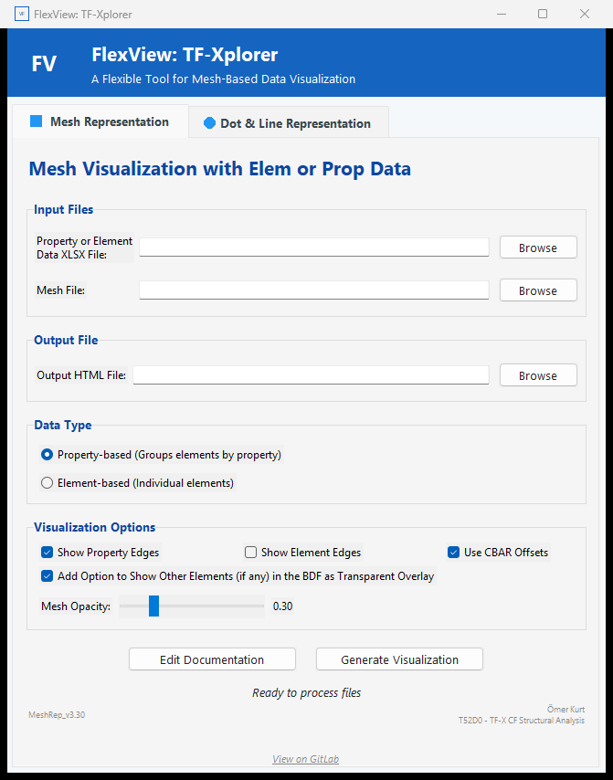
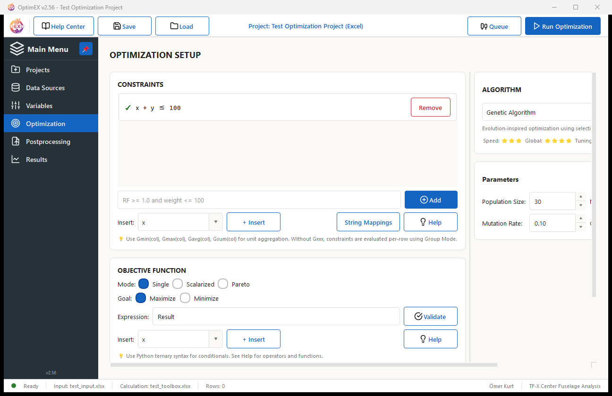
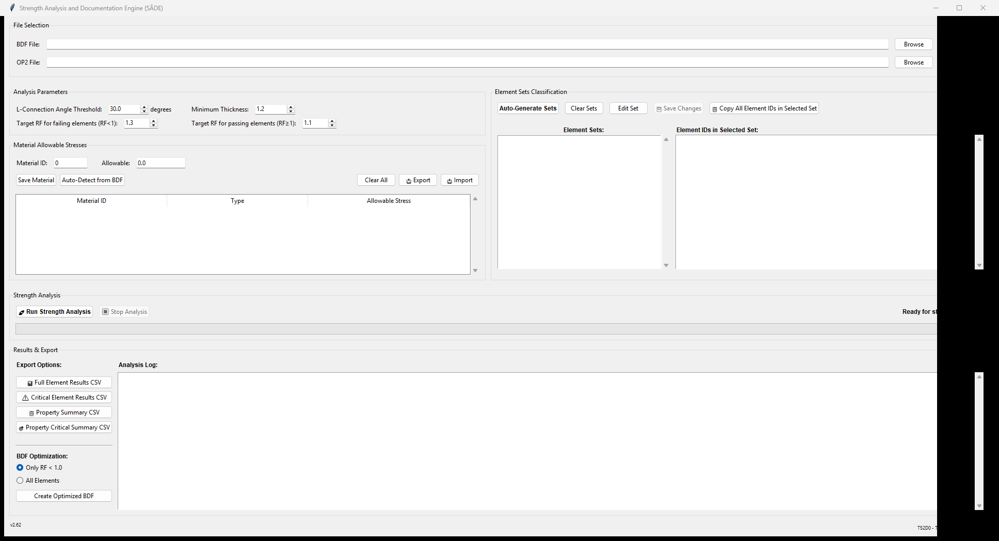
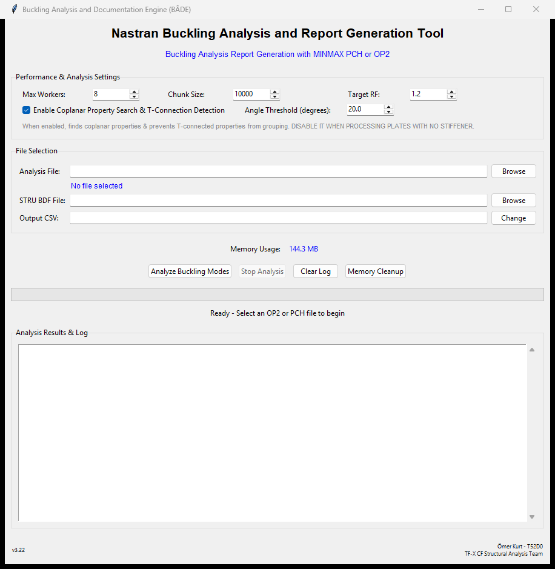
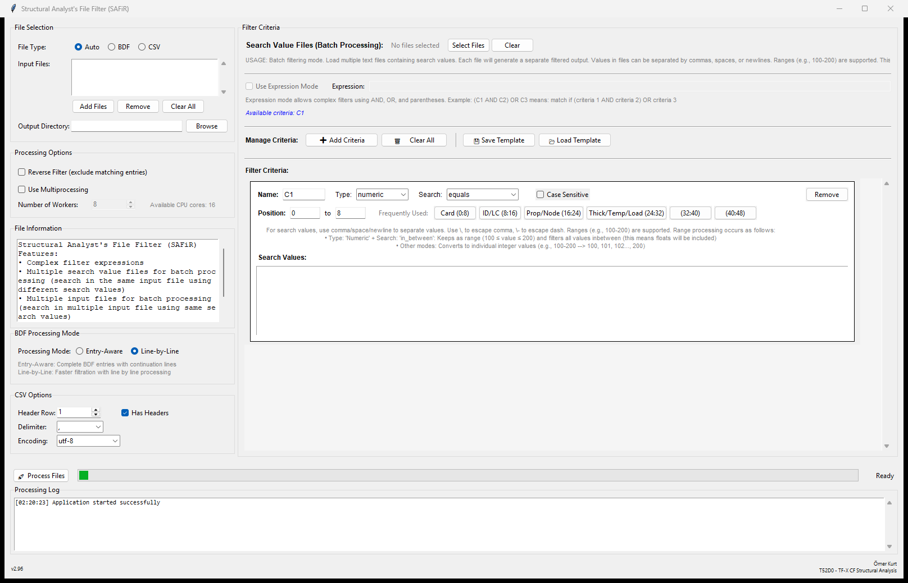
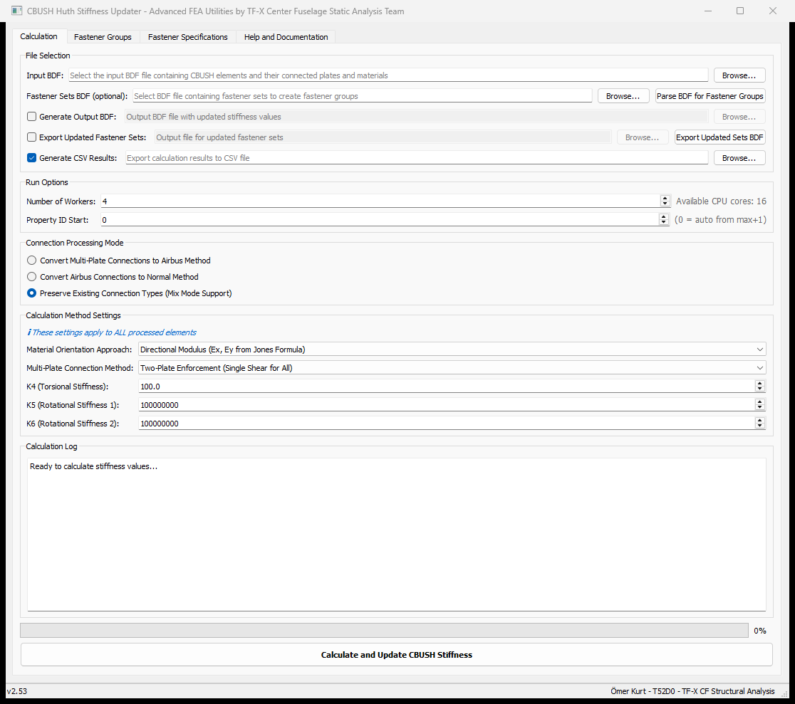
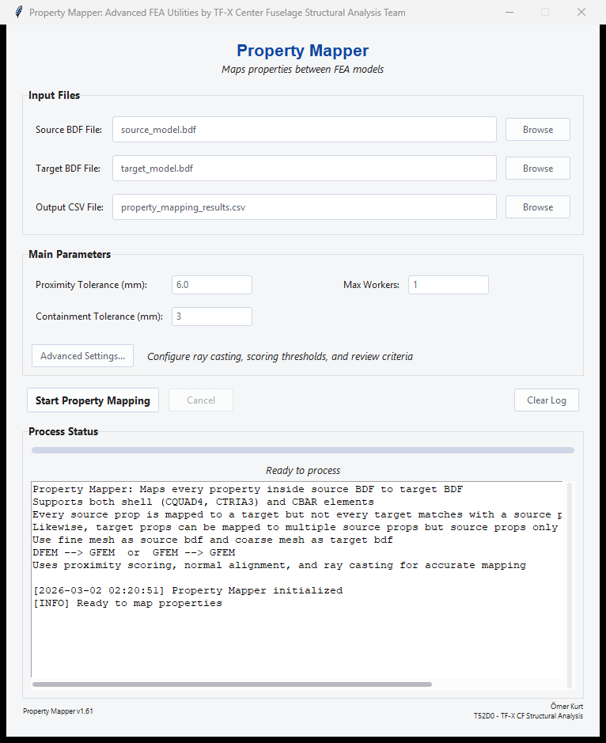
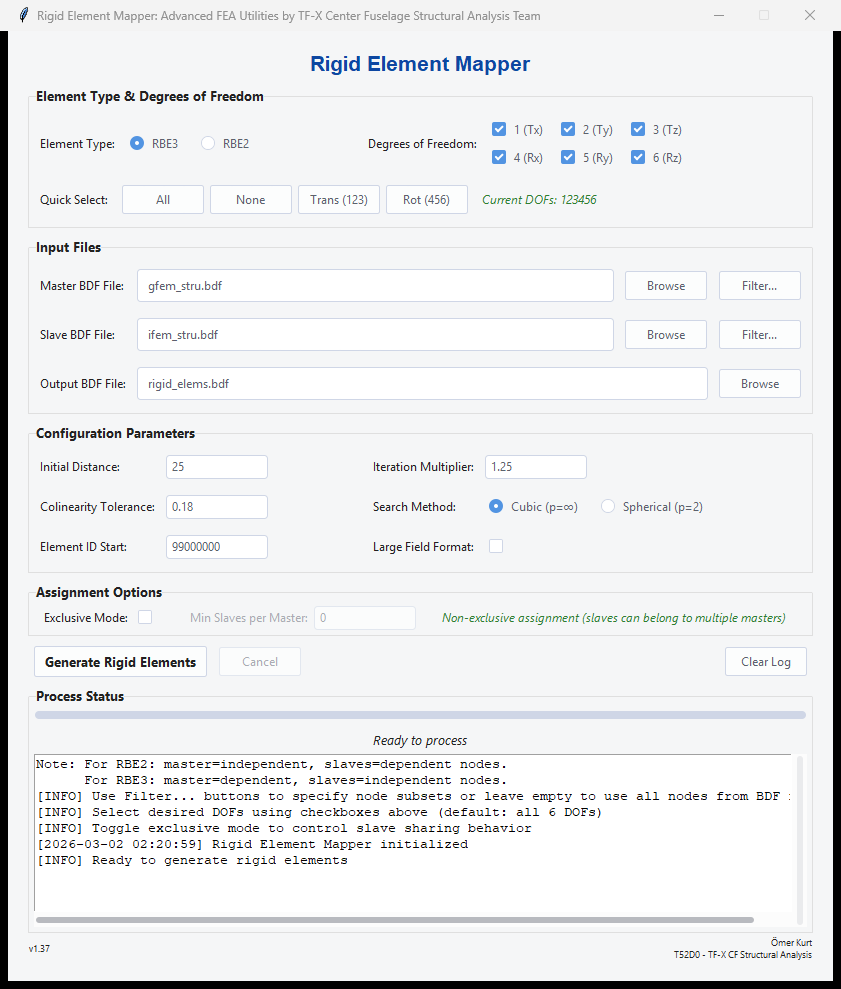
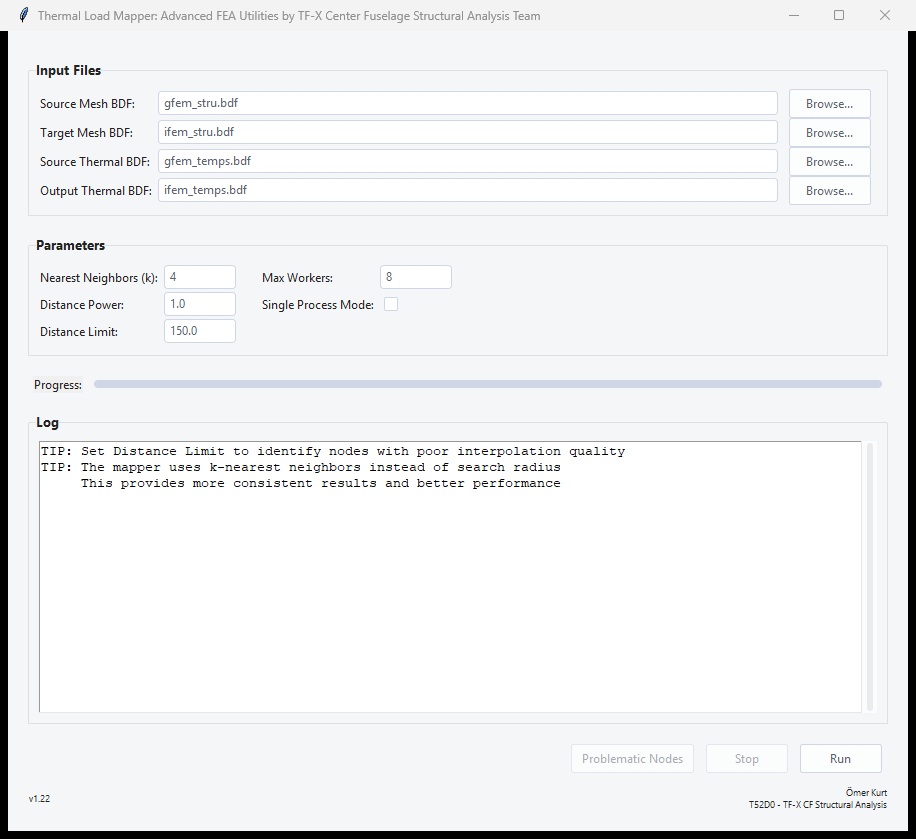
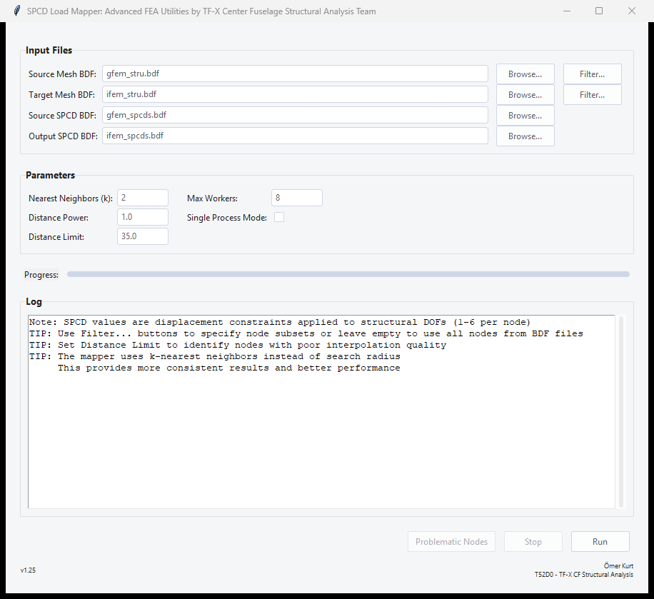

Engineering Tools
Production-grade tools automating FEA workflows for the aerospace industry. Click any card for details.

FlexView: TF-Xplorer
Interactive 3D mesh visualization generating S2D HTML reports. The standard data transfer method between 150+ analysis and 70+ design engineers, saving an estimated 30,000+ workhours annually.
- Property, element and node based visualization modes
- Interactive Plotly 3D with different coloring schemes
- Comprehensive legend editor
- Integrated documentation editor

OptimEX
Generalized metaheuristic optimization framework using Excel, executables, or ML models as evaluators. Supports single and multi-objective optimization with 10 algorithms.
- 10 algorithms: GA, DE, PSO, CMA-ES, NSGA-II/III, MOEA/D...
- Excel, EXE, Python, and ONNX ML evaluators
- Single and multi-objective optimization with Pareto front extraction
- ML model training pipeline with ONNX export
i-JAT
Multi-process automation orchestrating HyperMesh and Excel for end-to-end bolted joint analysis of composite and metallic aircraft structures, saving over 8,000 workhours annually.
- HyperMesh + Excel parallel orchestration
- Full analysis & re-analysis workflow modes
- Composite & metallic joint support
- Modern PyQt5 GUI with extensive error handling

SADE
Automated von Mises strength analysis with intelligent element classification by connection type and vectorized thickness optimization. Saves over 2,500 workhours annually.
- Allowable stress based element classification (CBUSH, T, L)
- Vectorized Pandas/NumPy analysis engine
- Automatic thickness optimization
- HDF5 persistence for large datasets

BADE
Extracts buckling mode data from Nastran results with structural connectivity analysis, coplanarity detection, and T-connection awareness.
- OP2 and PCH dual format support
- T-connection and coplanarity detection
- Cubic thickness optimization

SAFiR
High-performance BDF/TXT/CSV filtering with streaming architecture for 100GB+ files, entry-aware processing, and complex Boolean expressions.
- 100GB+ files with constant memory usage
- Entry-aware BDF with continuation lines
- Aho-Corasick multi-pattern matching
- 8 search types with AND/OR expressions


Huth Stiffness Updater
Calculates CBUSH fastener stiffness using the Huth formula, featuring support for CLT-based composite materials, multi-plate analysis, and the dual-CBUSH method.
- Huth formula: shear + axial stiffness
- Classical Lamination Theory (CLT) for composite material stiffness calculation
- CBUSH and material orientation handling
- Multi-plate analysis support
- Airbus dual-CBUSH method support
- Optimized: 100K CBUSHes in <30s

Property Mapper
Intelligent property transfer between FE meshes using proximity analysis, surface normal alignment, and ray casting with 5-level confidence assessment.
- 4-stage pipeline with ray casting as tie-breaker
- 5-level confidence scoring system
- R-tree + KDTree dual spatial indexing
- Preprocessed TCL script for mapping verification


RBE Mapper
Automatically generates RBE2/RBE3 rigid body elements with spatial algorithms, exclusive assignment modes, and colinearity detection.
- RBE2 and RBE3 element generation
- Priority-based conflict resolution
- KD-tree O(log n) spatial queries
- Slave colinearity detection via cross-product


Thermal Mapper
Maps thermal loads between different FE meshes using KNN interpolation with inverse distance weighting for coupled thermal-structural analysis.
- K-Nearest Neighbors + IDW interpolation
- Optimized KDTree spatial preprocessing
- Distance based quality analysis and reporting


SPCD Mapper
Interpolates prescribed displacement loads between meshes, preserving load case structure and DOF definitions for boundary condition transfer.
- K-Nearest Neighbors + IDW interpolation
- Optimized KDTree spatial preprocessing
- Distance based quality analysis and reporting
CF HyperMesh Toolbox
Comprehensive HyperMesh plugin with 75+ procedures for FEM model preparation, fastener modeling, quality checks, and analysis setup.
- EasyFast: automated fastener creation
- RBE3 mapping with colinearity checks
- 6 tabbed categories, 75+ procedures...